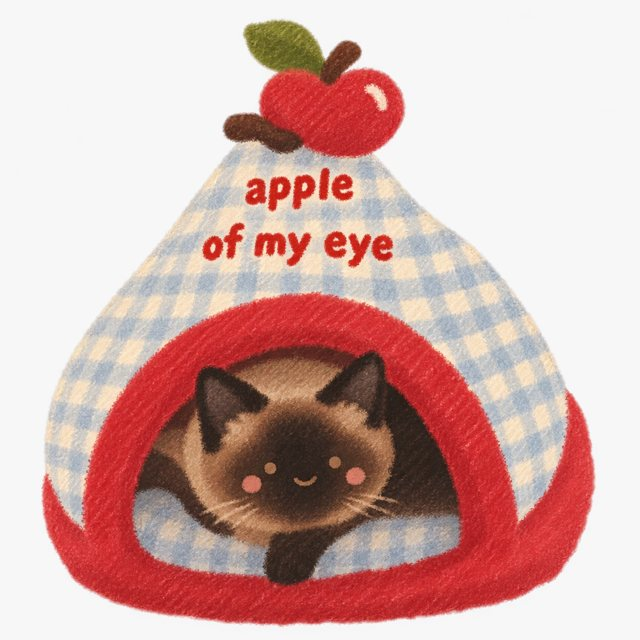
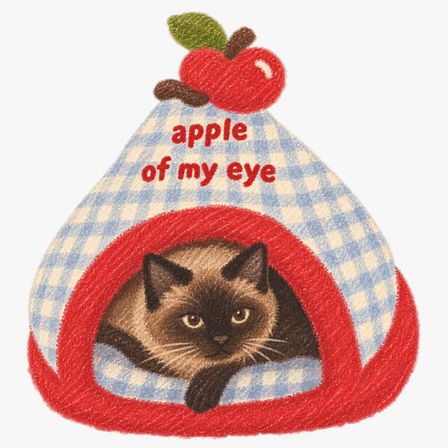
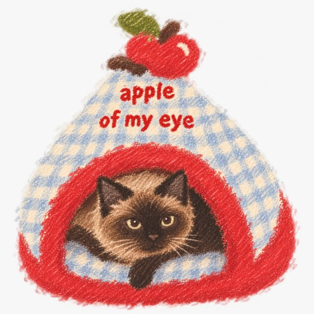
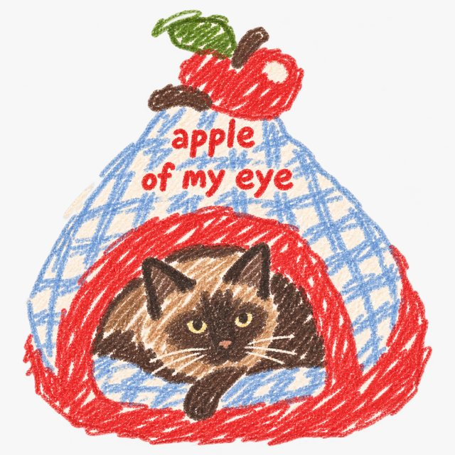

A skill that turns any photo into a loose oil pastel drawing: quick scribbled strokes, white paper showing through, colour that slips past the lines. Share a photo and it finds the subject on its own, so a whole series comes out in the same hand.




The prompt works on its own: attach a photo in ChatGPT or any tool that makes images and paste it in. The skill adds the fixes for common problems and keeps a whole series consistent.
Turn this photo into a loose, hand-drawn oil pastel illustration. Coloring: - Quick, loose back-and-forth scribble strokes, never filled in smoothly - Visible white paper gaps between strokes; uneven coverage, dense in some areas, sparse and streaky in others - Stroke direction follows each shape and changes from area to area - Color goes past the edge in a few places and leaves small areas unfilled in others - Thick, waxy, matte oil pastel texture; no smooth gradients, no airbrush, no glossy digital look Lines and shapes: - Outlines only where they help define a shape - Edges mostly firm with a few irregular spots; never an even rough border - Simplify details so it reads as a quick hand drawing - Keep faces recognizable with simple, real features (no cartoon smile, no blush) - Keep meaningful text or logos legible Composition: - Draw only the main subject of the photo, centered - Plain white paper background, no ground shadow, square 1:1
Give this prompt to your agent to install it. In ChatGPT or the Claude app, upload the .zip in your skill settings instead.
Started from figuring out how the drawings on drago.cloud were made.